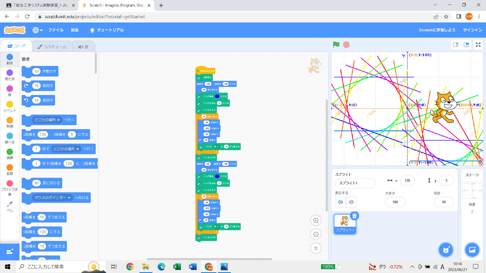
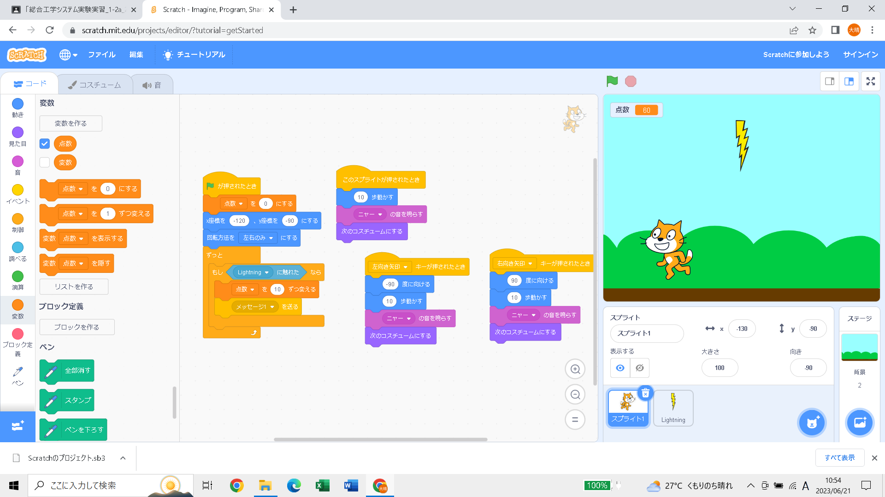

1週目のレポート ： 公大高専１年実習I-1
2a班6番 mshr
第1週目
1-1 サイエンスアート

1.内容
スクラッチを使って線を書くプログラムを～～～自分の文章で続きを書く。
2.感想
まったく同じプログラミングを復元して、座標を変えて、同じアートを描こうとしたけど座標を変えるだけでは同じアートができなくて、同じものをつくるだけでも難しいと感じた。
1-2 ゲーム

1.内容
スクラッチでゲームを作成した
2.感想
プログラムをつくる時、ゲームのキャラクターに動きをつけることだけも具体的にプログラミングして、モノにあたってモノが消えるようにするのにもプログラミングしなければならなくてプログラミングはとても難しいものだと感じた。なのでよく遊んでいるゲームは相当プログラミングに時間がかかるのかなと思った。
1-3 ホームページ作成
私のホームページ
1.内容
GitHub使って自分のホームページに書き込みをした
2.感想
ホームページをつくる時、最初からほとんどが完成していて、そこを少し書き換えるだけで簡単だったけれど１からホームページをつくるのはとても難しいと思った。そして、ホームページからほかのページに飛べるようにしたり、候補をまとめたりすることもできるようにするにはもっと複雑になるのか不思議に思った。